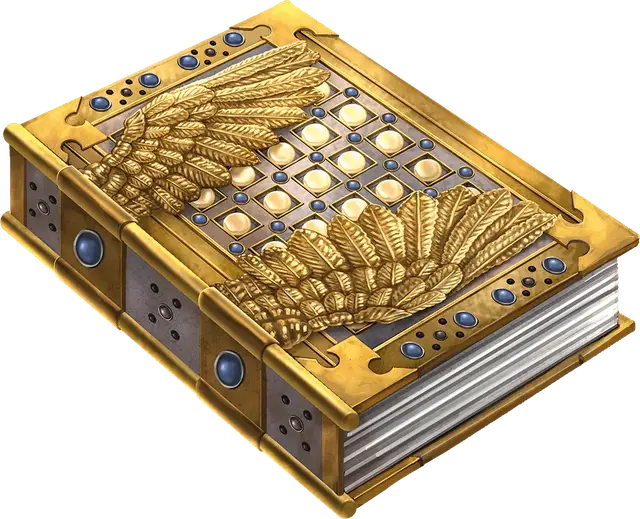

Книга превозносимых деяний
Book of Exalted Deeds
Чудесный предмет, артефакт (требуется настройка)

Книга превозносимых деяний, прославленный трактат обо всём добром во вселенной, играет важную роль во многих религиях, хотя её авторы наполнили страницы собственным видением истинных благодетелей, не посвящая книгу какой-либо отдельной вере и создав общее руководство по поражению зла.
Эта книга редко задерживается в одном месте. Как только Книгу прочтут, она исчезает, перемещаясь в другую часть мультивселенной, где её духовное направление может дать надежду обречённому миру. Хотя попытки её скопировать и предпринимались, ни одной не удалось ни передать её магическую суть, ни воссоздать пользу, которую она приносит чистым в сердце и твёрдым в намерениях.
Тайны содержания книги охраняет тяжёлая застёжка, выкованная в виде ангельских крыльев. Открыть её может только существо, настроенное на книгу. После открытия книги настроенное существо должно потратить 80 часов на её чтение и изучение, только после этого усваивая содержимое и получая её преимущества.
Другие существа могут читать текст на открытых страницах, но не извлекают из него глубокого смысла и не получают никаких преимуществ. Исчадие, Нежить или слуга божества с Нижних планов, пытаясь читать книгу, получает 24к8 урона Излучением. Этот урон игнорирует Сопротивление и Иммунитет, и этот урон нельзя уменьшить или избежать никакими средствами. Существо, чьи Хиты опускаются этим уроном до 0, исчезает во вспышке и уничтожается, роняя свои вещи. После нанесения урона книга исчезает, а настройка на неё прекращается.
Преимущества, предоставляемые Книгой превозносимых деяний, действуют только пока вы стремитесь к добру. Если вы сознательно совершите злой поступок или не сможете совершить хотя бы один добрый поступок (включая щедрость) в течение 10 дней, вы теряете все полученные от книги преимущества.
Небесное спокойствие. Пока вы настроены на книгу, вы обладаете Иммунитетом к состояниям Очарованный и Испуганный, а также Сопротивлением Психическому урону. Эти преимущества становятся постоянными, как только вы потратите необходимое время на чтение и изучение книги.
Божественная мудрость. Как только вы потратите необходимое время на чтение и изучение книги, ваша значение Мудрости увеличивается на 2, но не выше 24. Вы не можете получить это преимущество более одного раза.
Магия просвещения. С тех пор, как вы потратите необходимое время на чтение и изучение книги, каждая ячейка заклинаний, которую вы тратите на сотворение заклинания, считается ячейкой на один уровень выше.
Сияние. Как только вы потратите необходимое время на чтение и изучение книги, вы получаете защитное сияние. Это сияние излучает Яркий свет в радиусе 10 футов и Тусклый свет ещё на 10 футов. Вы можете погасить или воссоздать сияние Бонусным действием. Пока сияние не погашено, вы совершаете с Преимуществом проверки Харизмы (Убеждение). Кроме того, Исчадия и Нежить, находящиеся в радиусе Яркого света этого сияния, совершают с Помехой броски атаки по вам.
Случайные свойства. Книга превозносимых деяний обладает следующими случайными свойствами:
2 малых положительных свойства
2 основных положительных свойства
Уничтожение Книги. Книга превозносимых деяний не может быть уничтожена. Однако если её утопить в реке Стикс, все тексты и изображения исчезнут с её страниц, и книга станет бесполезной на 1к100 лет.